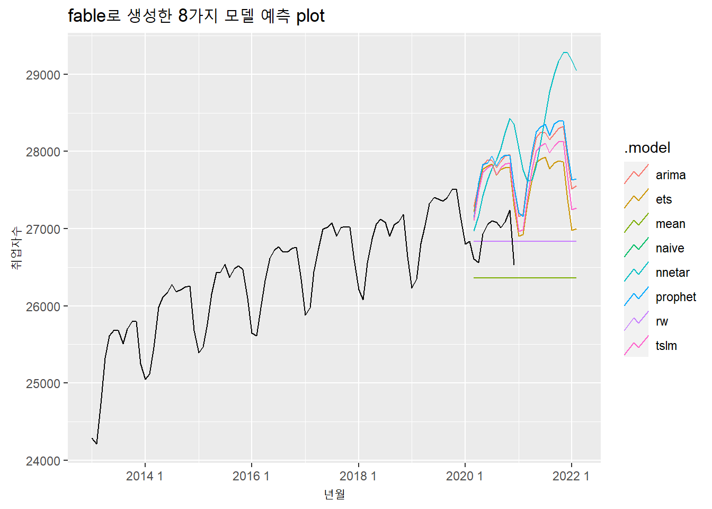
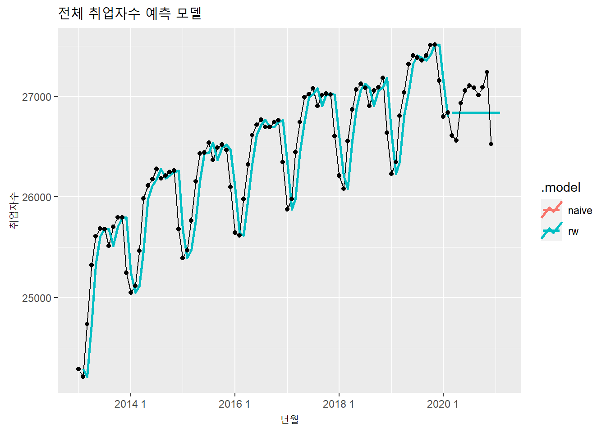

7.2 fable
fable is designed for
tsibbleobjects, forecast is designed fortsobjects.fable handles many time series at a time, forecast handles one time series at a time.
fable can fit multiple models at once, forecast fits one model at a time.
forecast produces point forecasts and prediction intervals. fable produces point forecasts and distribution forecasts. In fable, you can get prediction intervals from the forecast object using
hilo()and in plots usingautoplot().fable handles ensemble forecasting easily whereas forecast has no facilities for ensembles.
fable has a more consistent interface with every model specified as a formula.
Automated modelling in fable is obtained by simply not specifying the right hand side of the formula. This was shown in the
ARIMA()andETS()functions here.
7.2.1 미래 학생수 예측
split <- floor(nrow(students.tsibble) * 0.8)
n <- nrow(students.tsibble)
students.tsibble.tr <- students.tsibble[1:split, ]
students.tsibble.test <- students.tsibble[(split+1):n, ]library(fable)## Warning: package 'fable' was built under R version 4.0.3## Loading required package: fabletools## Warning: package 'fabletools' was built under R version 4.0.3##
## Attaching package: 'fabletools'## The following objects are masked from 'package:forecast':
##
## accuracy, forecastlibrary(fable.prophet)## Warning: package 'fable.prophet' was built under R version 4.0.3## Loading required package: Rcppmodel.fable.studetns <- students.tsibble.tr %>%
model(ets = ETS(학생수계),
arima = ARIMA(학생수계),
naive = NAIVE(학생수계),
tslm = TSLM(학생수계),
rw = RW(학생수계),
mean = MEAN(학생수계),
nnetar = NNETAR(학생수계),
prophet = prophet(학생수계)
)## Warning: 5 errors (1 unique) encountered for prophet
## [5] 'origin' must be suppliedforecast.fable.students <- model.fable.studetns %>% forecast(h = 10)forecast.fable.students %>% autoplot(students.tsibble, level = NULL)## Warning: Removed 50 row(s) containing missing values (geom_path).
forecast.fable.students %>% accuracy(students.tsibble.test) %>%
arrange(RMSE)## Warning: The future dataset is incomplete, incomplete out-of-sample data will be treated as missing.
## 10 observations are missing between 2021 and 2030## # A tibble: 40 x 11
## .model 지역규모 .type ME RMSE MAE MPE MAPE MASE RMSSE
## <chr> <fct> <chr> <dbl> <dbl> <dbl> <dbl> <dbl> <dbl> <dbl>
## 1 ets 특별/광역시~ Test -3.19e3 12018. 11184. -0.111 0.451 NaN NaN
## 2 arima 특별/광역시~ Test -5.84e4 63489. 58439. -2.37 2.37 NaN NaN
## 3 nnetar 특별/광역시~ Test -2.33e5 261541. 233453. -9.53 9.53 NaN NaN
## 4 naive 특별/광역시~ Test -2.94e5 320533. 293517. -11.9 11.9 NaN NaN
## 5 rw 특별/광역시~ Test -2.94e5 320533. 293517. -11.9 11.9 NaN NaN
## 6 tslm 특별/광역시~ Test -1.02e6 1030881. 1022804. -41.0 41.0 NaN NaN
## 7 mean 특별/광역시~ Test -1.02e6 1030881. 1022804. -41.0 41.0 NaN NaN
## 8 arima 계 Test NaN NaN NaN NaN NaN NaN NaN
## 9 arima 면지역 Test NaN NaN NaN NaN NaN NaN NaN
## 10 arima 시 Test NaN NaN NaN NaN NaN NaN NaN
## # ... with 30 more rows, and 1 more variable: ACF1 <dbl>best.model.fable.students <- model.fable.studetns %>%
select(ets, prophet)best.model.fable.students %>% forecast(h = 10) %>%
autoplot(students.tsibble, alpha = 0.6) +
autolayer(fitted(best.model.fable.students)) +
geom_point(aes(x = 연도, y = 학생수계))## Plot variable not specified, automatically selected `.vars = .fitted`## Warning in max(ids, na.rm = TRUE): max에 전달되는 인자들 중 누락이 있어 -Inf를
## 반환합니다
## Warning in max(ids, na.rm = TRUE): max에 전달되는 인자들 중 누락이 있어 -Inf를
## 반환합니다
## Warning in max(ids, na.rm = TRUE): max에 전달되는 인자들 중 누락이 있어 -Inf를
## 반환합니다
## Warning in max(ids, na.rm = TRUE): max에 전달되는 인자들 중 누락이 있어 -Inf를
## 반환합니다
## Warning in max(ids, na.rm = TRUE): max에 전달되는 인자들 중 누락이 있어 -Inf를
## 반환합니다
## Warning in max(ids, na.rm = TRUE): max에 전달되는 인자들 중 누락이 있어 -Inf를
## 반환합니다
## Warning in max(ids, na.rm = TRUE): max에 전달되는 인자들 중 누락이 있어 -Inf를
## 반환합니다
## Warning in max(ids, na.rm = TRUE): max에 전달되는 인자들 중 누락이 있어 -Inf를
## 반환합니다
## Warning in max(ids, na.rm = TRUE): max에 전달되는 인자들 중 누락이 있어 -Inf를
## 반환합니다
## Warning in max(ids, na.rm = TRUE): max에 전달되는 인자들 중 누락이 있어 -Inf를
## 반환합니다## Warning: Removed 50 row(s) containing missing values (geom_path).## Warning: Removed 105 row(s) containing missing values (geom_path).
7.2.2 미래 취업자수 예측
employees$yearmonth <- yearmonth(employees$time)
employees.tsibble <- as_tsibble(employees, index = yearmonth)split <- floor(nrow(employees.tsibble) * 0.9)
n <- nrow(employees.tsibble)
employees.tsibble.tr <- employees.tsibble[1:split, ]
employees.tsibble.test <- employees.tsibble[(split+1):n, ]model.fable.employees <- employees.tsibble.tr %>%
model(ets = ETS(total),
arima = ARIMA(total),
naive = NAIVE(total),
tslm = TSLM(total),
rw = RW(total),
mean = MEAN(total),
nnetar = NNETAR(total),
prophet = prophet(total)
)forecast.fable.employees <- model.fable.employees %>% forecast(h = 24)forecast.fable.employees %>% autoplot(employees.tsibble, level = NULL)
forecast.fable.employees %>% accuracy(employees.tsibble.test) %>% arrange(RMSE)## Warning: The future dataset is incomplete, incomplete out-of-sample data will be treated as missing.
## 14 observations are missing between 2021 1 and 2022 2## # A tibble: 8 x 10
## .model .type ME RMSE MAE MPE MAPE MASE RMSSE ACF1
## <chr> <chr> <dbl> <dbl> <dbl> <dbl> <dbl> <dbl> <dbl> <dbl>
## 1 naive Test 83.4 259. 247. 0.301 0.917 NaN NaN 0.203
## 2 rw Test 83.4 259. 247. 0.301 0.917 NaN NaN 0.203
## 3 mean Test 560. 611. 560. 2.07 2.07 NaN NaN 0.203
## 4 tslm Test 560. 611. 560. 2.07 2.07 NaN NaN 0.203
## 5 ets Test -730. 740. 730. -2.71 2.71 NaN NaN -0.0628
## 6 prophet Test -827. 839. 827. -3.07 3.07 NaN NaN -0.397
## 7 arima Test -833. 840. 833. -3.10 3.10 NaN NaN -0.289
## 8 nnetar Test -833. 920. 833. -3.10 3.10 NaN NaN 0.485best.model.fable.employees <- model.fable.employees %>%
select(naive, rw)best.model.fable.employees %>%
forecast(h = 12) %>%
autoplot(employees.tsibble, level = NULL, lwd = 1) +
autolayer(fitted(best.model.fable.employees), lwd = 1) +
geom_point(aes(x = yearmonth, y = total)) +
labs(title = '전체 취업자수 예측', x = '년월', y = '취업자수')## Plot variable not specified, automatically selected `.vars = .fitted`## Warning: Removed 2 row(s) containing missing values (geom_path).
7.2.3 미래 코로나 확진자수 예측
fill.covid19.by.age.tsibble <- fill_gaps(wide.covid19.by.age.tsibble, `0-9세` = 0)split <- floor(nrow(fill.covid19.by.age.tsibble) * 0.9)
n <- nrow(fill.covid19.by.age.tsibble)
fill.covid19.by.age.tsibble.tr <- fill.covid19.by.age.tsibble[1:split, ]
fill.covid19.by.age.tsibble.test <- fill.covid19.by.age.tsibble[(split+1):n, ]model.covid19.by.age.tsibble <- fill.covid19.by.age.tsibble.tr %>%
model(ets = ETS(`0-9세`),
arima = ARIMA(`0-9세`),
naive = NAIVE(`0-9세`),
tslm = TSLM(`0-9세`),
rw = RW(`0-9세`),
mean = MEAN(`0-9세`),
nnetar = NNETAR(`0-9세`),
prophet = prophet(`0-9세`)
)forecast.covid19.by.age.tsibble <- model.covid19.by.age.tsibble %>%
forecast(h = 120)forecast.covid19.by.age.tsibble %>% autoplot(fill.covid19.by.age.tsibble, level = NULL)
forecast.covid19.by.age.tsibble %>% accuracy(fill.covid19.by.age.tsibble.test) %>% arrange(RMSE)## Warning: The future dataset is incomplete, incomplete out-of-sample data will be treated as missing.
## 89 observations are missing between 2021-02-10 and 2021-05-09## # A tibble: 8 x 10
## .model .type ME RMSE MAE MPE MAPE MASE RMSSE ACF1
## <chr> <chr> <dbl> <dbl> <dbl> <dbl> <dbl> <dbl> <dbl> <dbl>
## 1 prophet Test -6.32 10.5 8.89 -38.9 46.6 NaN NaN 0.371
## 2 naive Test -8.39 11.4 10 -51.7 55.8 NaN NaN 0.234
## 3 rw Test -8.39 11.4 10 -51.7 55.8 NaN NaN 0.234
## 4 ets Test -12.4 14.6 13.1 -70.9 72.4 NaN NaN 0.234
## 5 mean Test 15.6 17.4 15.6 61.8 61.8 NaN NaN 0.234
## 6 tslm Test 15.6 17.4 15.6 61.8 61.8 NaN NaN 0.234
## 7 arima Test -16.8 18.7 16.9 -92.1 92.5 NaN NaN 0.281
## 8 nnetar Test -23.9 25.7 23.9 -126. 126. NaN NaN 0.391best.model.covid19.by.age.tsibble <- model.covid19.by.age.tsibble %>% select(prophet)best.model.covid19.by.age.tsibble %>%
forecast(h = 120) %>%
autoplot(fill.covid19.by.age.tsibble, lwd = 1, alpha = 0.6) +
autolayer(fitted(best.model.covid19.by.age.tsibble), lwd = 1) +
geom_point(aes(x = date, y = `0-9세`)) +
labs(title = '코로나 확진자수 예측', x = '년월일', y = '확진자수')## Plot variable not specified, automatically selected `.vars = .fitted`